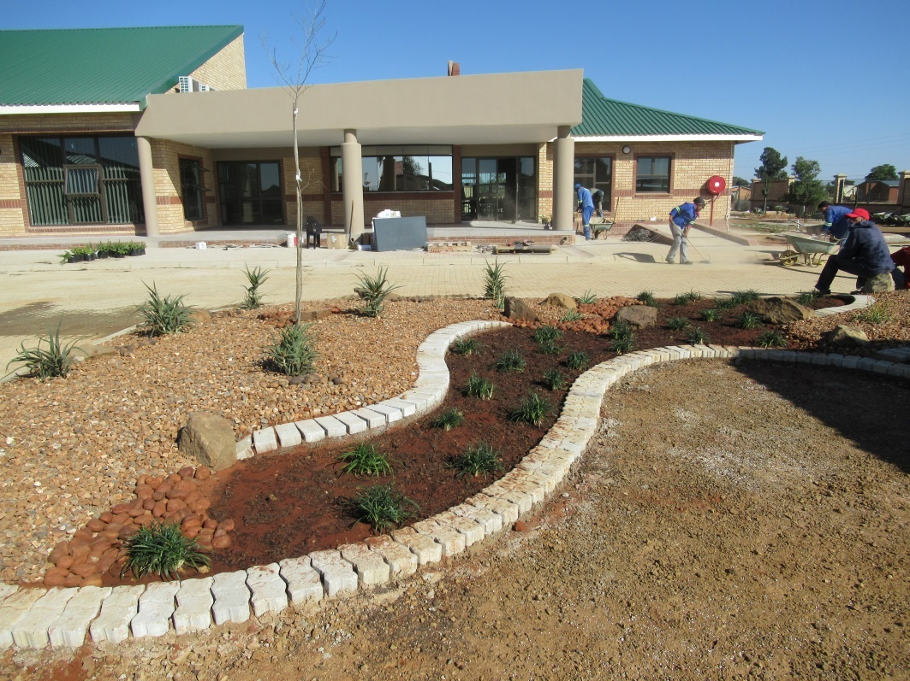

Construction Services
Electrical Works.
Electrical works are coordinated with the wider professional and construction team as part of integrated building delivery.




Electrical works are coordinated with the wider professional and construction team as part of integrated building delivery.
